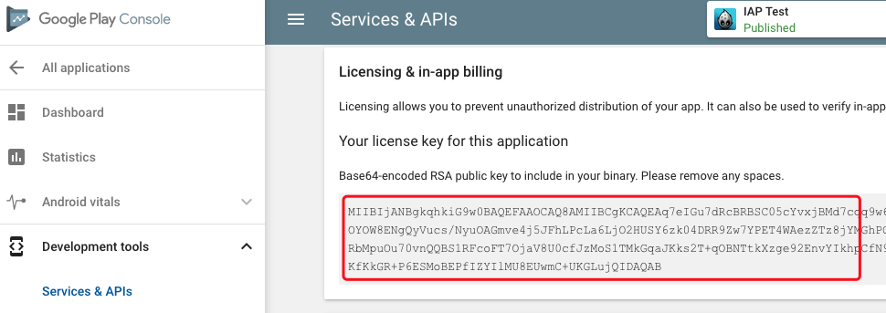

IAP 集成指南
For the Lua version of cocos2d-x v3.x - (all other versions)
新手 《iOS内购 - 账户信息填写》
- App Store Connect 帮助 - App 内购买项目配置流程
- https://www.jianshu.com/p/4f5f0b45b083
- http://xiaovv.me/2018/05/03/My-iOS-In-App-Purchase-Summarize/
集成
用如下命令来集成 SDKBOX IAP 插件,请确保您可以正常执行的 SDKBOX 安装器.
sdkbox import iap
重点注意事项
如果您升级到了 Xcode7, 则需要以下额外步骤来确保插件工作正常:
禁用应用程序安全传输策略
添加以下项到 plist:
<key>NSAppTransportSecurity</key>
<dict>
<key>NSAllowsArbitraryLoads</key>
<true/>
</dict>
添加后的文件内容看起来就像这样：

禁止 Bitcode 支持
您必须禁止 Bitcode 的支持，否则将会编译失败。
游戏全屏配置
如果您的游戏不同时支持横竖屏，则必须在 Xcode 中选中 Requires full screen，否则将不会通过 Apple 的审核。
canOpenURL 白名单
取决于您使用哪些插件。需要在 info.plist 的 LSApplicationQueriesSchemes 下添加名单。
JSON 配置
SDKBOX 安装器会自动在您的工程中添加一个样例配置文件sdkbox_config.json.在您编译工程前,请修改里面的参数,用您自己的应用信息
现在给一个修改例子,您需要在iTunes Connect获取一个应用id,然后替换 <put the product id for ios here>,或者,在Google Play Console申请一个应用id,并替换<put your googleplay key here>
"ios" :
{
"iap":{
"items":{
"remove_ads":{
"id":"<put the product id for ios here>"
}
}
}
},
"android":
{
"iap":{
"key":"<put your googleplay key here>",
"items":{
"coins":{ // 这是可消耗商品
"id":"<put the product id for android here>"
},
"remove_ads":{
"id":"<put the product id for android here>",
"type":"non_consumable" // 这是不可消耗商品
},
"subscription_item":{
"id":"<put the product id for android here>",
"type":"subs" // 这是订阅商品
}
}
}
}
注意: sdkbox_config.json 中的 Goolge IAP key 是从 Google Play Console 中取到的, Google Console->Developer Tools->Services & APIs, 请看如下截图:

iOS 测试
- iOS 模拟器不支持购买测试，请使用物理设备进行购买测试
- 您需要用 iTunesConnect 账户创建一个测试 IAP 的测试账号
Android 测试
- 编译 release 版本，并在谷歌发布 alpha 或者 beta 渠道
- 必须是 alpha 或者 beta 渠道的测试者
- 使用您的
秘钥替换sdkbox_config.json中的IAP->Android->key字段. 登录 https://play.google.com/apps/publish/, 打开对应的游戏, 菜单 "Development tools -> Services & APIs -> in-app billing"
SKPaymentTransactionStateDeferred 测试
SKPaymentTransactionStateDeferred 是 iOS IAP 订单的一个中间状态. 对于大部数开发者而言, 不用关心这个中间状态.
如果你需要测试 SKPaymentTransactionStateDeferred 的话，可以在 sdkbox_config.json 中添加 simulatesAskToBuyInSandbox 项, 如下:
"ios":
{
"iap": {
"simulatesAskToBuyInSandbox": true,
"items": { ... }
}
}
更多关于 SKPaymentTransactionStateDeferred
初始化时机
IAP 的初始化, 请注意以下几点:
- App 启动后, 尽量早地初始化 IAP .
- 请先 setListener , 再 init .
- 如果有多个插件, IAP 的 init 应首先调用.
使用
修改 Lua 代码
修改 ./frameworks/runtime-src/Classes/lua_module_register.h 以包含如下必须头文件, 并调用 IAP 的lua注册函数.注意它们的参数 lua_State* :
#include "PluginIAPLua.hpp"
#include "PluginIAPLuaHelper.h"
static int lua_module_register(lua_State* L)
{
register_all_PluginIAPLua(L);
register_all_PluginIAPLua_helper(L);
}
初始化 IAP
修改您的lua代码去初始插件, 初始化可以在任何地方来做,但是必须要在您想使用插件的功能之前.
sdkbox.IAP:init()
获取最新的商品数据
最好在您的游戏开始前从服务器获取一次最新的商品数据
要获取商品数据,只需要简单调用 sdkbox.IAP:refresh().
onProductRequestSuccess获取成功会收到这个事件.
onProductRequestFailure获取失败收到这个事件.
购买
购买商口调用 sdkbox.IAP:purchase(name)
注意: name 是您工程的 IAP 配置文件中的 items 项下的名字,而不是您在 iTunes 或 GooglePlay Store中的商品名
onSuccess购买成功事件.
onFailure购买失败事件.
onCanceled用户取消购买,会触发这个事件.
恢复购买
恢复购买调用 sdkbox.IAP:restore().
onRestored恢复成功事件.
注意: onRestored 可能被会多次触发
处理付费事件
您可以接收付费过程中的 IAP 事件, 不同事件对用户, IAP 服务器做不同的处理.
sdkbox.IAP:setListener(function(args)
if "onSuccess" == args.event then
local product = args.product
dump(product, "onSuccess:")
elseif "onFailure" == args.event then
local product = args.product
local msg = args.msg
dump(product, "onFailure:")
print("msg:", msg)
elseif "onCanceled" == args.event then
local product = args.product
dump(product, "onCanceled:")
elseif "onRestored" == args.event then
local product = args.product
dump(product, "onRestored:")
elseif "onProductRequestSuccess" == args.event then
local products = args.products
dump(products, "onProductRequestSuccess:")
elseif "onProductRequestFailure" == args.event then
local msg = args.msg
print("msg:", msg)
else
print("unknow event ", args.event)
end
end)
Promotion IAP
启用 Promotion IAP
如果你想使用 iOS Promoting IAP 的话:
- 实现
IAPListener中的onShouldAddStorePayment. - 在
itunes connect网页中做相关配置
现在在 onShouldAddStorePayment 中，我们默认返回 true. 所以每次用户在 store 中点击，都会弹出购买提示。
如果你的应用有存在需要取消购买或延迟购买的情况，你需要在这个回调中实现自己的逻辑来返回 true 或 false.
Promotion IAP 设置
你可以设置 promotion iap 商品在不同手机显示不同的商品，或以不同的顺序显示:
sdkbox.IAP.updateStorePromotionOrder({"remove_ads"});sdkbox.IAP.updateStorePromotionVisibility('remove_ads', true);sdkbox.IAP.fetchStorePromotionOrder();sdkbox.IAP.fetchStorePromotionVisibility('remove_ads');
更多详情见Promoting IAP 官方文档
API Reference
Methods
sdkbox.IAP:init(jsonconfig)
Initialize SDKBox IAP
sdkbox.IAP:setDebug(debug)
Enable/disable debug logging
sdkbox.IAP:purchase(name)
Make a purchase request
@Param name is the name of the item specified in sdkbox_config.json
sdkbox.IAP:refresh()
Refresh the IAP data(title, price, description)
sdkbox.IAP:restore()
Restore purchase
sdkbox.IAP:setListener(listener)
Set listener for IAP
sdkbox.IAP:removeListener()
Remove listener for IAP
sdkbox.IAP:enableUserSideVerification()
sdkbox.IAP:isAutoFinishTransaction()
get auto invoke finishTransaction flag
sdkbox.IAP:setAutoFinishTransaction(b)
set auto invoke finishTransaction flag
sdkbox.IAP:finishTransaction(productid)
to invoke ios finishTransaction api
sdkbox.IAP:fetchStorePromotionOrder()
sdkbox.IAP:updateStorePromotionOrder(productNames)
sdkbox.IAP:fetchStorePromotionVisibility(productName)
sdkbox.IAP:updateStorePromotionVisibility(productName, visibility)
sdkbox.IAP:getPurchaseHistory();
get all purchase history, include cancelled, expired
sdkbox.IAP:getInitializedErrMsg();
get initialized error message
sdkbox.IAP:requestUpdateTransaction();
request all unfinish transaction, and retrigger onSuccess, onFailed or onCancel event with corresponding transaction.
just valid on iOS
e.g. if there have two transaction (one is success, on is canceled) havn't been finish, after invoke requestUpdateTransaction, onSuccess will trigger with the success transaction, onCancelled will trigger with the cancelled transaction.
Note: for most developer, this api is needn't, onSuccess, onFailed or onCancel will auto trigger when transaction updated.
Listeners
onInitialized(success)
Called when IAP initialized
onSuccess(p)
Called when an IAP processed successfully
onFailure(p, msg)
Called when an IAP fails
onCanceled(p)
Called when user canceled the IAP
onRestored(p)
Called when server returns the IAP items user already purchased @note this callback will be called multiple times if there are multiple IAP
onProductRequestSuccess(products)
Called the product request is successful, usually developers use product request to update the latest info(title, price) from IAP
onProductRequestFailure(msg)
Called when the product request fails
onRestoreComplete(ok, msg)
Called when the restore completed
onShouldAddStorePayment(productName)
onFetchStorePromotionOrder(productNames, error)
onFetchStorePromotionVisibility(productName, visibility, error)
onUpdateStorePromotionOrder(error)
onUpdateStorePromotionVisibility(error)
onPurchaseHistory(purchases)
onConsumed(product, error)
onDeferred(product)
Called when IAP pay deferred
Note: Pay deferred status is a middle status, for most developer, needn't case this status this status will change to success or failed or cancel, its final status is pending external action.
Please DO NOT finishTransaction when status is deferred.
手动集成
如果 SDKBOX 安装器 安装插件失败了，那么需要手动集成插件.如果安装器安装插件成功了,那么不需要，也没必要,按文档再手动集成一次.
下面列出的的步骤一般很少用到.如果你按下面的步骤完成了集成，请在完成集成后，再按步骤检查一次.
iOS 平台手动集成
Drag and drop the following frameworks from the plugins/ios folder of the IAP bundle into your Xcode project, check Copy items if needed when adding frameworks:
拖拽下列 framework 从 IAP 插件包的 plugins/ios 目录到您的 Xcode 工程中，在添加 frameworks 的时候，请勾选 Copy items if needed 。
sdkbox.framework
PluginIAP.framework
上面的 frameworks 依赖于其他 frameworks。如果您没有添加它们，您也需要添加下列这些 frameworks：
Security.framework
StoreKit.framework
SystemConfiguration.framework
把 plugin/luabindings 文件夹中所有的头文件和源文件都拷贝到你的工程的 Classes 文件夹中.
把刚刚拷贝的文件拖动到 Xcode 中或使用 File -> Add files to... 来添加.
Android 平台手动集成
拷贝文件
从插件安装包中的 plugin/android/libs 目录拷贝下列 jar 文件到您的工程的 proj.android/libs 目录。
PluginGooglePlay.jar
PluginIAP.jar
sdkbox.jar
-
如果你使用 cocos2d-x 源码，拷贝 jar 文件到：
Android command-line:
cocos2d/cocos/platform/android/java/libsAndroid Studio:
cocos2d/cocos/platform/android/libcocos2dx/libs -
如果你使用 cocos2d-js 或者 lua ，拷贝 jar 文件到:
Android command-line:
frameworks/cocos2d-x/cocos/platform/android/java/libsAndroid Studio:
frameworks/cocos2d-x/cocos/platform/android/libcocos2dx/libs -
如果你使用 cocos2d-x 预编译包，拷贝 jar 文件到：
Android command-line:
proj.android/libs
从 plugin/android/jni 目录拷贝 pluginiap 以及 sdkbox 目录到您的工程的 proj.android/jni 目录。如果 sdkbox 目录在工程中已经存在，请覆盖它。
编辑 AndroidManifest.xml
在标签 application tag 上添加下列权限：
<uses-permission android:name="android.permission.INTERNET" />
<uses-permission android:name="android.permission.ACCESS_NETWORK_STATE" />
<uses-permission android:name="com.android.vending.BILLING"/>
编辑 Android.mk
编辑 proj.android/jni/Android.mk：
为 LOCAL_STATIC_LIBRARIES 添加额外的库：
LOCAL_STATIC_LIBRARIES += PluginIAP
LOCAL_STATIC_LIBRARIES += sdkbox
在所有 import-module 语句之前添加一条 call 语句：
$(call import-add-path,$(LOCAL_PATH))
在最后添加额外的 import-module 语句：
$(call import-module, ./sdkbox)
$(call import-module, ./pluginiap)
这意味着您的语句顺序看起来像是这样：
$(call import-add-path,$(LOCAL_PATH))
$(call import-module, ./sdkbox)
$(call import-module, ./pluginiap)
Note: 如果您使用的是 cocos2d-x 预编译库，那么保证这些语句在已有的 $(call import-module,./prebuilt-mk) 语句之上非常重要。
编辑 Application.mk （只限 Cocos2d-x v3.0 到 v3.2 版本）
编辑 proj.android/jni/Application.mk 保证 APP_STL 的定义正确。如果 Application.mk 包含了 APP_STL := c++_static 语句，那么这条语句应该被改为：
APP_STL := gnustl_static
把 plugin/luabindings 文件夹中所有的头文件和源文件都拷贝到你的工程的 Classes 文件夹中.
把你刚刚拷贝的 .cpp 文件添加到 Android.mk 文件的的 LOCAL_SRC_FILES 项.比如
LOCAL_SRC_FILES := hellocpp/main.cpp \
../../Classes/AppDelegate.cpp \
../../Classes/HelloWorldScene.cpp \
../../Classes/NewSourceFile.cpp
修改 AppActivity.java
插件版本 >= 2.4.0.3
- 找到 AppActivity.java 文件
find . -name "AppActivity.java"
- 把
extends Cocos2dxActivity替换为extends com.sdkbox.plugin.SDKBoxActivity
以下是 AppActivity.java 不同版本的引擎所在的目录：
cpp
- proj.android/src/org/cocos2dx/cpp/AppActivity.java
- proj.android-studio/app/src/org/cocos2dx/cpp/AppActivity.java
- proj.android/app/src/org/cocos2dx/cpp/AppActivity.java ( from cocos2d-x 3.17)
lua
- frameworks/runtime-src/proj.android/src/org/cocos2dx/lua/AppActivity.java
- frameworks/runtime-src/proj.android-studio/app/src/org/cocos2dx/lua/AppActivity.java
- frameworks/runtime-src/proj.android/app/src/org/cocos2dx/lua/AppActivity.java (from cocos2d-x 3.17)
js
- frameworks/runtime-src/proj.android/src/org/cocos2dx/javascript/AppActivity.java
- frameworks/runtime-src/proj.android/app/src/org/cocos2dx/javascript/AppActivity.java ( from cocos2d-x 3.17)
插件版本 < 2.4.0.3
-
如果您使用 cocos2d-x 源代码，假设您在
proj.android目录下，那么您可以在如下位置找到Cocos2dxActivity.java文件：../../cocos2d-x/cocos/platform/android/java/src/org/cocos2dx/ lib/Cocos2dxActivity.java -
如果您使用 cocos2dx-x 预编译库， 假设您在
proj.android目录下，那么您可以在如下位置找到Cocos2dxActivity.java文件：./src/org/cocos2dx/lib/Cocos2dxActivity.java
Note: 当你使用 cocos2d-x 源代码时，不同的版本中 Cocos2dxActivity.java 文件的位置也不同。一个确定该文件位置的方法是查看 proj.android/project.properties 。比如：
android.library.reference.1=../../cocos2d-x/cocos/platform/android/java
在这个例子中， Cocos2dxActivity.java 文件应该在如下位置：
../../cocos2d-x/cocos/platform/android/java/src/org/cocos2dx/lib/Cocos2dxActivity.java
- 修改
Cocos2dxActivity.java文件，导入如下包：
import android.content.Intent;
import com.sdkbox.plugin.SDKBox;
- 然后，修改
Cocos2dxActivity类的onCreate(final Bundle savedInstanceState)函数，添加一个调用语句SDKBox.init(this);。添加的位置非常重要，必须在调用onLoadNativeLibraries();之后。如下：
onLoadNativeLibraries();
SDKBox.init(this);
-
最后, 我需要提供合适的 overrides 方法的代码。这里有一些约定如下。
-
如果这个被列出的方法没有在
SDKBox中定义，那么__定义它__。 -
如果这个被列出的方法已经被定义在
SDKBox中，那么请调用这个在SDKBox中的__同名方法__。
-
@Override
protected void onActivityResult(int requestCode, int resultCode, Intent data) {
if(!SDKBox.onActivityResult(requestCode, resultCode, data)) {
super.onActivityResult(requestCode, resultCode, data);
}
}
@Override
protected void onStart() {
super.onStart();
SDKBox.onStart();
}
@Override
protected void onStop() {
super.onStop();
SDKBox.onStop();
}
@Override
protected void onResume() {
super.onResume();
SDKBox.onResume();
}
@Override
protected void onPause() {
super.onPause();
SDKBox.onPause();
}
@Override
public void onBackPressed() {
if(!SDKBox.onBackPressed()) {
super.onBackPressed();
}
}